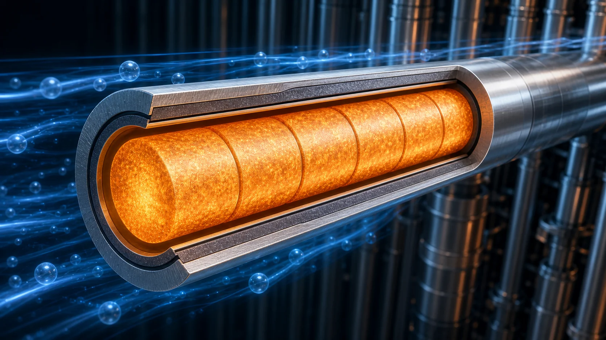
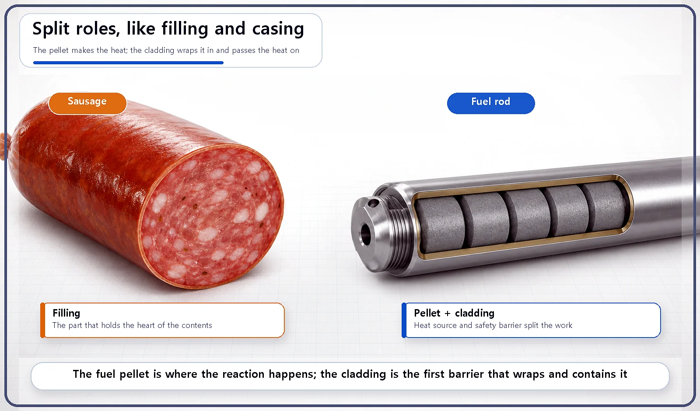
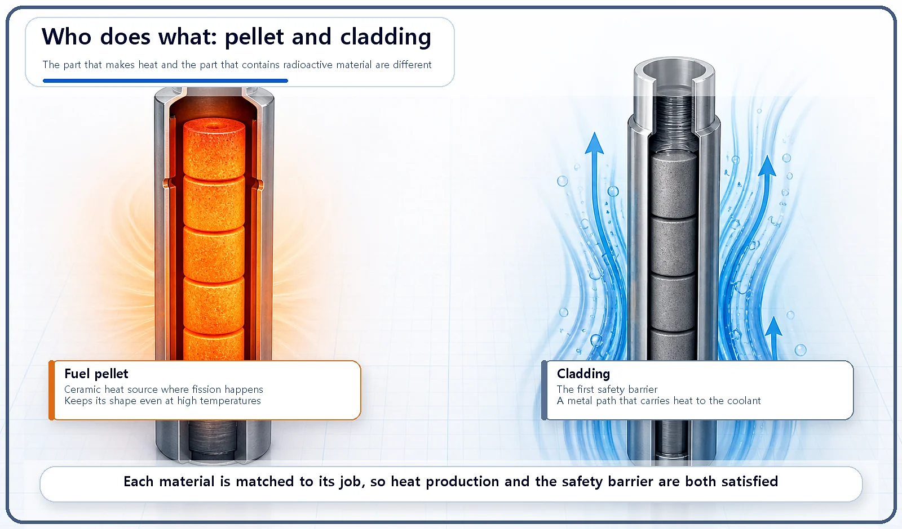

Reactor Components · 053
Filling and Casing — How Fuel Pellets and Cladding Split the Work
Like a sausage's filling and casing, a fuel rod splits its work between a heat source and a first safety barrier.

Inside a fuel rod, two parts split the work. The ceramic fuel pellet is where fission happens and heat is made; the zirconium-alloy cladding around it is the first barrier that keeps radioactive material in and the path that carries heat to the coolant. Using a different material for each job lets both jobs be done well. [1]
Think about biting into a sausage
A sausage has two basic parts. There's the filling, where all the flavor and juice is packed, and there's the thin casing wrapped around it. Without the casing, the filling couldn't hold its shape; it would simply fall apart and spill out.
A nuclear fuel rod is a tube called the cladding with fuel pellets packed inside. The relationship between those two parts looks remarkably like the filling and the casing of a sausage.
The fuel pellet: where the reaction happens
A fuel pellet is a small piece of uranium made into a ceramic, uranium dioxide. But a pellet does far more than simply hold the material. The reaction itself, in which uranium nuclei absorb neutrons, split apart and release heat, in other words fission, takes place right inside the pellet. In sausage terms, the pellet is the filling, the part where all the substance is concentrated.
There's a reason it's made as a ceramic. Ceramics can stay solid and hold their shape up to very high temperatures, so they remain stable even in an environment that produces as much heat as a reactor does. On top of that, the ceramic structure tends to hold on to many of the gaseous and solid products created by fission, keeping them inside the pellet. So the pellet itself already does part of the job of trapping radioactive material.

The cladding: the casing that keeps it all in
The cladding is the thin metal tube that wraps around the fuel pellets, made mainly of an alloy of the metal zirconium. Its first job is to stop the radioactive material produced by fission from escaping into the coolant. Nuclear power plants surround radioactive material with several layers of safety barriers, and the innermost one, the first barrier, is this cladding.
At the same time, the cladding must pass the heat from the pellets on to the coolant efficiently. So the material has to conduct heat well without absorbing too many neutrons. Because it is always in contact with the coolant, it also has to resist corrosion and be mechanically strong. Zirconium alloy is chosen because it meets all of these conditions at once.
Think of a good sausage casing: thin enough to let heat through when you cook it, yet tough enough not to burst. The cladding has a similar balancing act, only with far stricter requirements.

| Fuel pellet | Cladding | |
|---|---|---|
| Material | Ceramic (uranium dioxide) | Metal (mainly zirconium alloy) |
| Main job | Site of fission; the heat source | First safety barrier; carries heat to the coolant |
| Key requirements | Holds its shape at very high temperatures; retains many fission products | Conducts heat well, absorbs few neutrons, resists corrosion, mechanically strong |
Why splitting the roles matters
The fuel pellet is where the reaction happens; the cladding is what contains the results. Thanks to this division of labor, the heat-producing function and the safety-barrier function can each be built from the material best suited to that purpose.
This two-layer structure is the innermost layer, the first physical barrier, among the many layers of protection a nuclear power plant uses to contain radioactive material. Outside it, further barriers such as the reactor coolant system and the pressure vessel add more layers of protection.
Two common misconceptions
"Fuel pellets and cladding are made of the same material." No. The fuel pellet is a ceramic (uranium dioxide) and the cladding is a metal (zirconium alloy). Each material is chosen for its own purpose.
"The cladding is just a container with no real function." No. The cladding is a safety barrier that contains radioactive material, and at the same time it is the path that carries heat to the coolant.
Key takeaways
The fuel pellet is where fission happens; the cladding keeps the products of fission from escaping while carrying heat to the coolant. Two different materials, each optimized for its role, together form the first of the multiple barriers that contain radioactive material in a nuclear power plant.